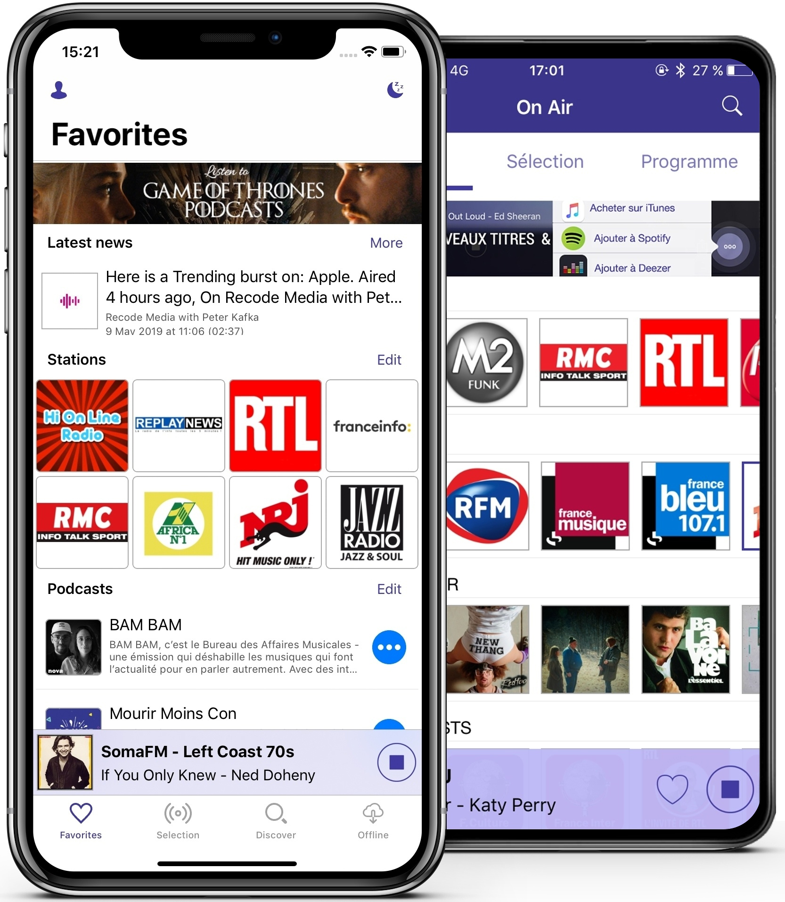
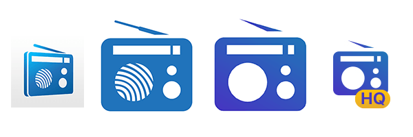
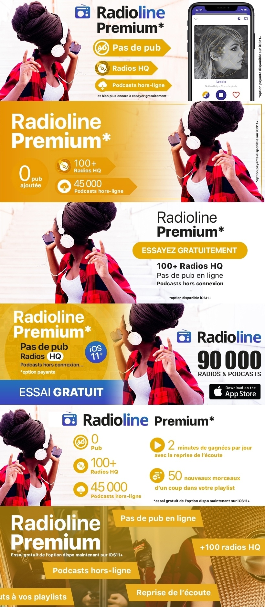
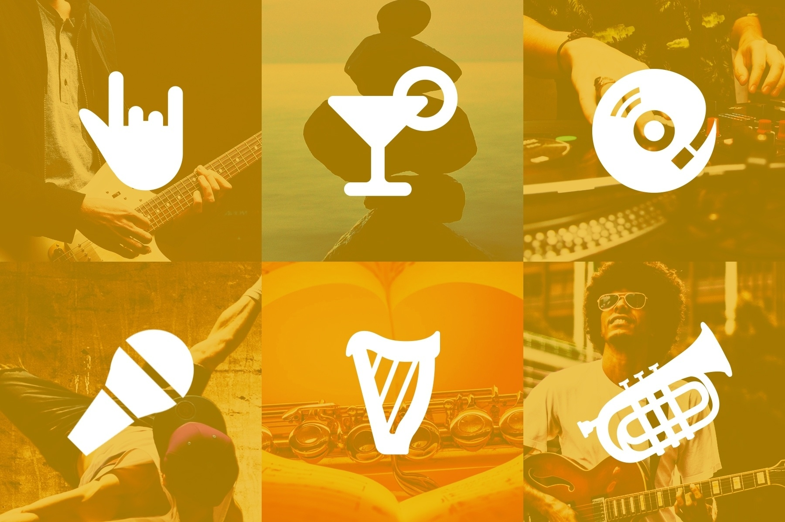
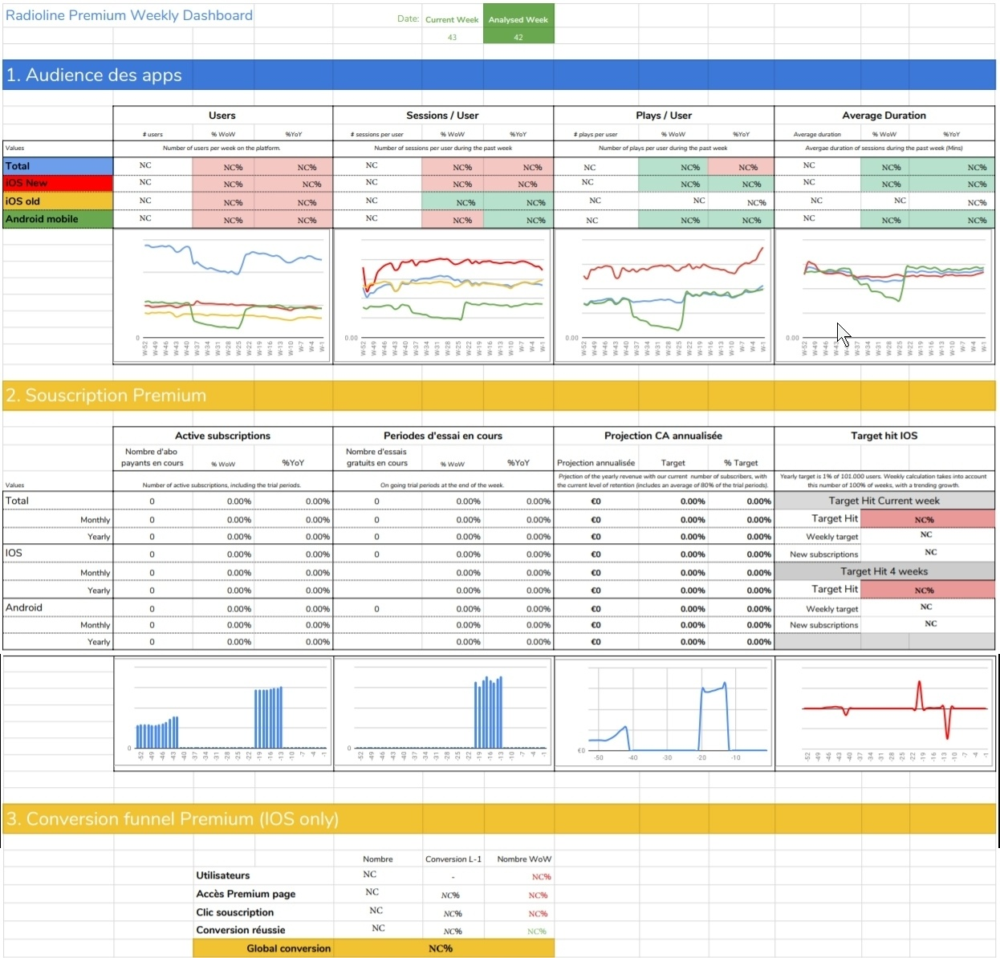
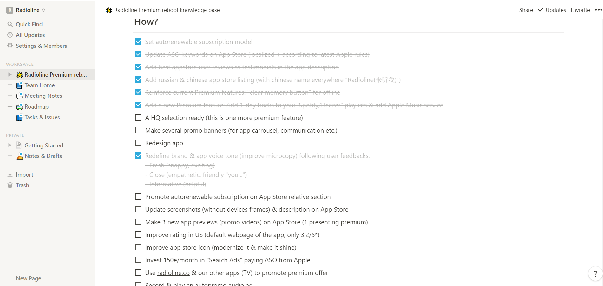
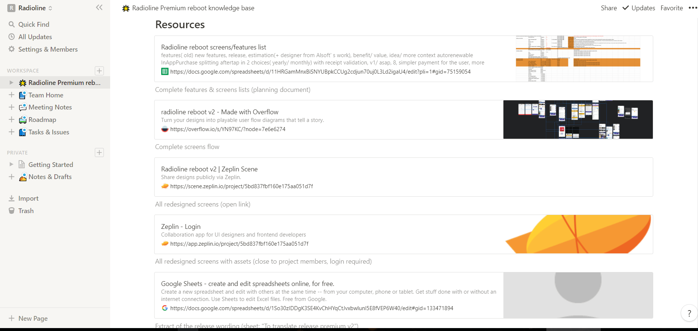
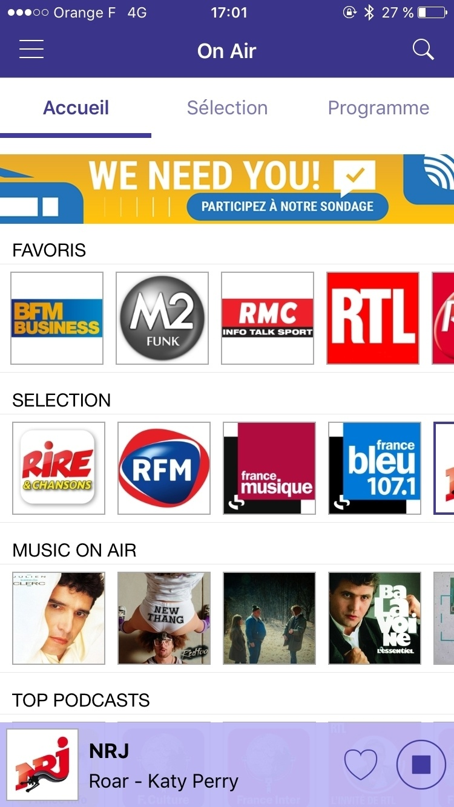

Interface & Marketing














A great decision has been made between us and our stakeholders: Radioline should have a decent paid offer. For that, app should first be redesigned, simplified, have a premium look and offer real paid arguments. After a lot of user research, including qualitative interviews and more quantitative surveys via inapp banners and specific platforms, and a lot of wireframes studies and developers negociations, we finaly agree that the new product will be launched on iOS first. Also, we built a special dynamic dashboard with data automatically fetched weekly from Google Analytics and the App Store to follow the KPI that we defined as critical for the success of the release. Some marketing actions were launched at specific times to help with the launch, such as inapp push notifications, emailing campaigns, an ad campaign acquisition etc. Radioline hit the top 10 of the appstore in the music section!